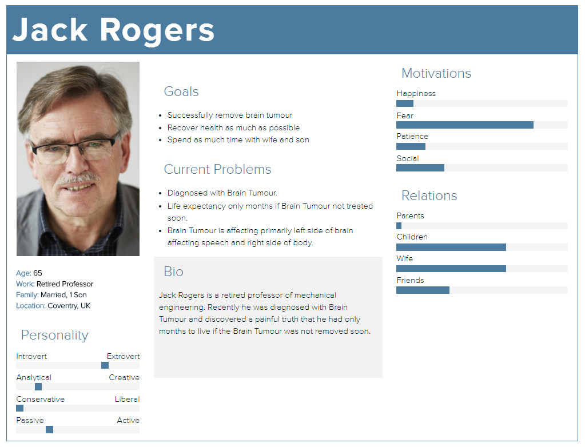
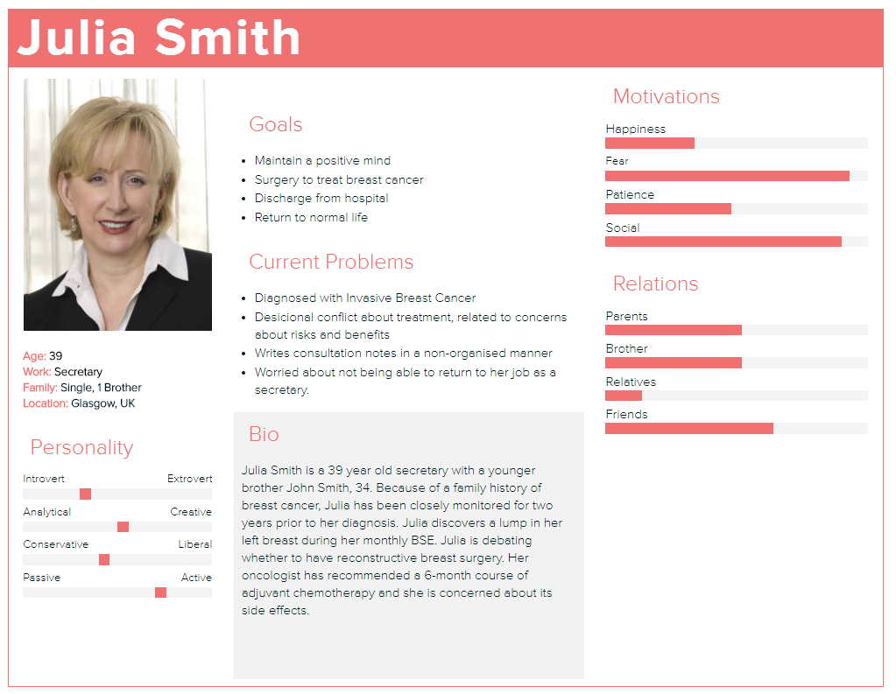
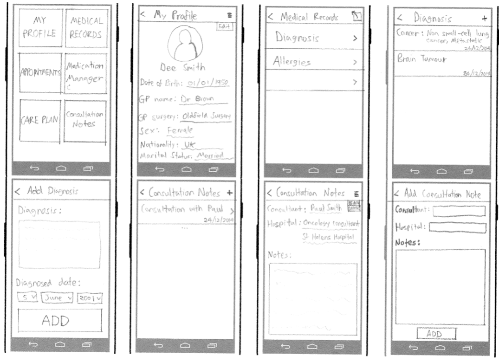

There are six User Interface Design Principles we will follow to ensure good quality user interface design and user experience. They follow the usage-centred design according to Larry Constantine, pioneer and contributor to applications design and development. They also closely resemble the design principles highlighted in our Human Computer Interaction module.
Structure – The design should organise the structure of the app purposefully and meaningfully. This involves grouping together related objects and separating unrelated things, or making similar objects resemble one another while distinguishing different objects. This helps reduce cognitive load on the user and allows them to understand the interface easier and quicker.
Simplicity – The design should focus on making common tasks within the app simple, easy and understandable. This prevents the user having to figure out how to perform the most common tasks within the app, thus making their experience easier.
Visibility – The design should only present relevant information on the screen and not overwhelm the user with unnecessary or redundant information. A good user interface should allow the user to focus on their own goals and not on the problems of the user interface.
Feedback – The design should inform users when changes to the state of the app have been made, when errors are thrown, or if the app requires input from the user.
Tolerant – The design should be able to react appropriately to all user inputs, including invalid inputs as this would prevent critical errors and confusion.
Consistency – The design should use similar behaviours throughout the app, thus maintaining consistency and limiting the need for the user to re-evaluate and remember.
While designing the User Interface we used knowledge gained from our Human Computer Interaction module to help refine the process and produce a more effective User Interface.
A persona describes a type of user, and helps focus attention on the user’s goals and motivations to encourage a user-centred approach to design.


A Scenario describes the context of the user, and provides a shared understanding of the user’s needs when designing the app. It is usually an example of the user achieving some goal with the app.
Julia calls her oncologist and makes an appointment on Wednesday 30th November – 2:00pm at the Beatson West of Scotland Cancer Centre. The purpose of the appointment was to discuss her treatment plans for breast cancer. Immediately after ending the call, Julia opens up the What’s The Plan application on her Samsung Galaxy. She then logs in using her login credentials and taps on the appointment icon to navigate to her schedules. She adds a new appointment by touching the + icon and fills in the description textbox as “Treatment plan consultation” and enters the date by tapping the calendar icon and selected 30th November on the calendar. She also types in the time: “2:00pm” and location “BWoSCC” into the corresponding textboxes and finally taps the Add button. Her appointment is now visible on the list in the Appointments section of the app. On the day before her appointment, Julia receives a notification from her smartphone from the What’s The Plan app notifying that her appointment for “Treatment plan consultation” is scheduled for tomorrow at 2:00pm.
Below is the final draft of sketches drawn for the app after evaluating the design principles mentioned above and using the HCI concepts.

When we sent our Final UI Design Sketches to our client, we later received feedback from the client and a contact GP from Macmillan Cancer stating that the designs were “a huge step in the right direction.” They also suggested some improvements as we’d hoped for which we later implemented in the prototype.
Some of these improvements involved:
• Including NHS number + hospital number as a unique identifier, as opposed to just name or DOB.
• Including previous cancer treatments i.e. surgery, radiotherapy and chemotherapy as these are often the cause of different complications.